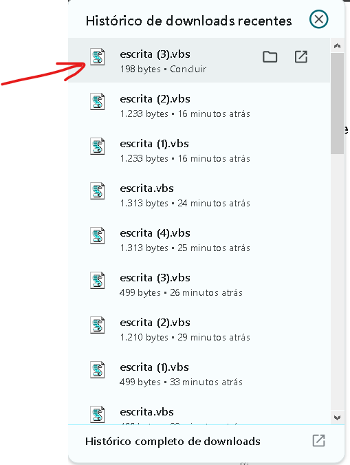

O dia amanheceu claro, e a brisa suave acariciava as folhas das árvores. Na praça central, as pessoas começavam a se reunir para o evento que aconteceria mais tarde. A excitação estava no ar, e todos esperavam ansiosamente pelo momento em que o grande anúncio seria feito.
“Será que finalmente teremos boas notícias?” alguém comentou, enquanto caminhava entre os grupos de amigos. “Espero que sim. A cidade precisa de algo que nos traga esperança.”
A tensão era palpável, e, ao longe, podia-se ouvir o som da música começando a tocar. O evento estava prestes a começar, e todos estavam prontos para ouvir o que o futuro reservava.
De repente, o palco foi iluminado e uma figura conhecida subiu ao microfone. O público silenciou, esperando ansiosamente as palavras que estavam por vir.
“Bem-vindos! Hoje é um dia histórico para nossa cidade. Juntos, vamos iniciar uma nova fase que trará mudanças significativas para todos nós!”, anunciou com um sorriso confiante.
Gerador de VBS
O vídeo acima mostra como usar o gerador de VBS. Nele, você verá o passo a passo de como inserir um texto e gerar automaticamente um arquivo de script VBS que pode ser executado em um sistema Windows.
O gerador é uma ferramenta útil para automatizar a digitação de textos em programas e sistemas.
Como funciona?
Após gerar o arquivo VBS com o texto desejado, ele pode ser executado em qualquer máquina com Windows. Veja abaixo alguns exemplos de como o script pode ser utilizado em diferentes fases do processo:
A primeira imagem mostra a interface do gerador de VBS. Aqui, o usuário insere o texto que deseja automatizar.

Na segunda imagem, o arquivo VBS foi gerado e baixado para o computador. O nome do arquivo gerado pode ser personalizado pelo usuário, e ele estará pronto para ser executado.
A imagem mostra o momento em que o script VBS está sendo executado.
Quando executado, ele automatiza a digitação do texto em qualquer campo que aceite a entrada de texto.